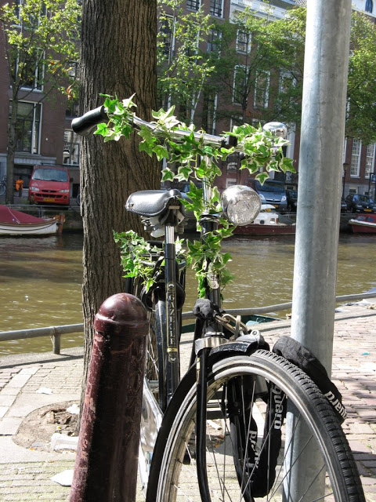

DONNERSTAG, 30. AUGUST 2007
Das Wochenende ist da und wir haben schon einen unserer Dudes verloren. Jedoch nicht für lange Zeit. Hannes ist ins
Ländle zurückgekehrt um eine weitere Palette Geld zu besorgen. Nein, Spass bei Seite: Hannes' Schwester heiratet am
Freitag und da muss er natürlich dabei sein.
Die zwei anderen Dudes wollten die Gelegenheit beim Schopfe packen und sich ein fietsje (Fahrrad) kaufen. Denn genauso
wie bei den Chinesen ist in Amsterdam das wichtigste Fortbewegungsmittel das Fahrrad (wir Dudes nennen das ab sofort nur
noch fietsje [fize] )

Aber ein Fahrrad zu besitzen nutzt einem gar nichts in Amsterdam wenn man nicht ein adäquates Schloss zu seinem fietsje
hat. Also erst mal ab auf den Waterlooplein, den ultimativen Secondhand bzw. Schrottmarkt Amsterdams. Dort haben wir
diese Schätzchen gekauft und hoffen, dass mit diesen unsere "fizn" sicher sind.
Einen Haken gibt es aber an diesem Dudes-Abenteuer:
Unsere überaus verlässliche Quelle sagte uns, dass JEDEN Donnerstag fietsje-Verkauf an der UvA ist und wir nur darauf zu
achten haben, rechtzeitig dort zu sein um an der Verlosung teilzunehmen. Ja, die fietsje werden nicht verkauft sondern
um es gerecht zu halten werden Lose verteilt und wer eine Nummer hat die unter der Anzahl an fietsje entspricht hat
Glück und bekommt eines.
Aber wie es der Zufall so will, ist gerade an DIESEM "besonderen" Donnerstag keine Fahrradverlosung. Diesen super
Umstand hat das ASVA (Studentenverein) versäumt auf ihrer Homepage in Englisch zu vermerken, so dass die nette Studentin
am Schalter diese Auskunft jedem Austauschstudenten geben musste. Darunter fielen auch wir Dudes, daran kann auch unser
umwerfender und Frauen-in-Ekstase-versetzender Charme nichts ändern.
So kamen wir wieder in der DutchDude-Residenz an mit einem 5kg Schloss im Gepäck und keinem fietsje.
Mitleid kann in den Kommentaren abgegeben werden.
Weitere Fotos von dieser Tour durch Chinatown und dem Rest von Amsterdam gibts hier.
BackHomeNext